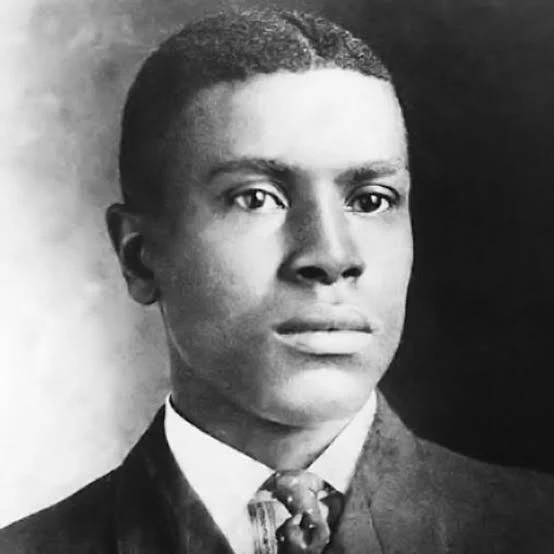
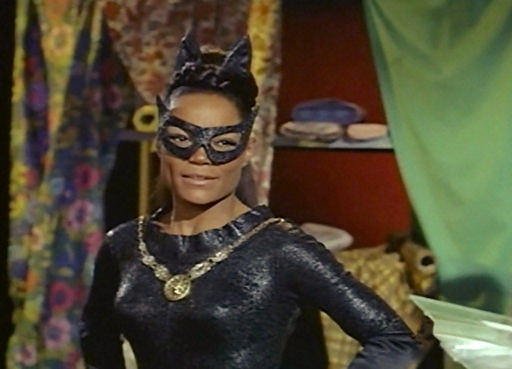

Weiredly, us and the AI bots haven't really got a lot of forgotten legends in the file section. This the best we could do really. All of the suggestions were boring and the only one's the team could think up of were just fictional characters.
Oscor Micheaux
Oscar Micheaux was a pioneering and prolific African-American author, film director, and independent producer who created "race films" for Black audiences during the first half of the 20th century, challenging racist portrayals and exploring complex themes of Black life.

Severed Head from 7
Gwyneth Paltrow's Traveling Severed Head: A Gross Se7en Legend, Explained. Read More: https://www.looper.com/1641956/gwyneth-paltrow-seven-severed-head-prop-contagion/

Eartha Kitt
A sultry purr of defiance, rising from poverty to global icon as singer, actress, and activist. From "Santa Baby" seduction to trailblazing Catwoman, she shattered barriers with unapologetic flair—proving resilience and authenticity make legends eternal.
